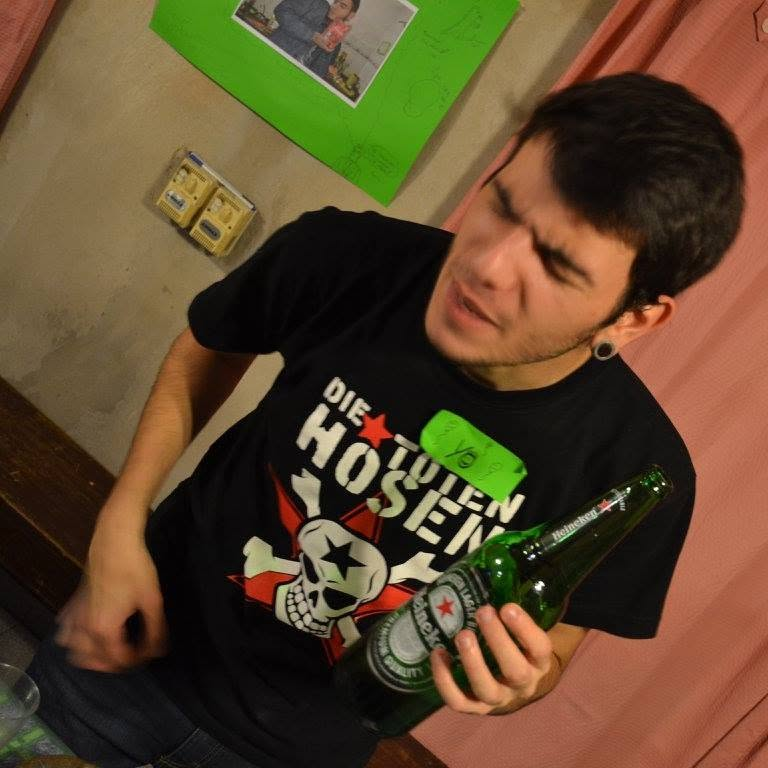

Hola, soy Federico Lopez, tengo 27 años. Vivo en Quilmes y estoy estudiando la carrera de Tecnicatura en Analisis de Sistemas.
Comence a estudiar esta carrera debido a que siempre me interesó la informatica y porque quiero en un futuro trabajar de programador. Me gusta afrontar los nuevos desafios que se me presentan cada dia.
Soy docente de Computacion, introduccion a programacion, NTICx y Robotica en dos escuelas, en el San Gabriel en Solano y en el Instituto Buckingham en Quilmes